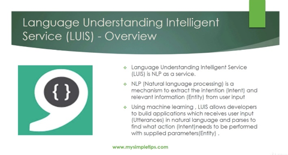

RELATED TECHNOLOGIES
Soundscape is a Microsoft product without equal in the marketplace. Soundscape provides vision-impaired users with the ability to learn their physical environment via sound and create a mental picture via spoken words. What our application is solving is the addition of machine learning to the Soundscape experience. There is no current application that achieves this as we intend to build it.
Development tools:
Github (version control)
We used a Github repository to share Ionic projects and to have a systematic way of keeping track of the latest version of our application during development. Github includes many features that make a project such as ours easier, such as branching and pull requests. Documentation can also be produced from the features built into Github. There is a wiki that provides a lot of useful information on topics related to programming projects. Tracing new bugs is also easier with the revisions to code being constantly logged by the built-in Git system. In addition, the service also includes free hosting of static web pages and mechanisms to recruit new contributors to projects.
Sublime Text Editor and Visual Studio Code IDE
Text editors were used to code the application in various languages. These two editors are particularly ubiquitous and the Microsoft Visual Studio is one of the best Integrated Development Environments for many programming languages and particularly ones that involve Windows applications.
Ionic (main development framework)
The Ionic Application Development Environment is the main tool used to develop and render the application.
There are many advantages of choosing Ionic as a mobile application development framework. Ionic allows us to write in JavaScript and angular. One large advantage of writing an application in Ionic is that the application is highly portable between other platforms. The nature of the framework makes development fast as it leverages off of the tools and skills used for web page development. Another large advantage of using the Ionic Mobile application development framework is that it is open source and free so we can keep our development costs low.
Xcode (iOS application builder)
Xcode was used to deploy the application from the Ionic framework to the iPhone. Xcode is a product of Apple and is free IDE that integrates many other tools. Xcode has a lot of good features as an IDE but our main use of it was to run the application developed within the Ionic Cordova frameowork.
APIs:
HTML5 Speech-To-Text
Our main API for interpreting speech and delivering it further into our application algorithms. The HTML5 Speech Recognition API gives JavaScript access to the audio input stream of the browser, which allows us to convert the speech into text. We create speech recognition objects and can access various methods and event handlers.
Microsoft Speech API
We examined the use of the Microsoft Speech API (SAPI) which allows the use of speech recognition and speech synthesis. However, it seems best suited to Microsoft Windows application and our application is specifically targeted at the iPhone device. We decided at the HTML5 Web-Speech-API would be a simpler choice for our application.
Microsoft Language Understanding Service
We incorporated the Microsoft Language Understanding Service to add natural language understanding to the application. By using this API, we are able to deduce the intent of the user’s verbal statements and make decisions in our algorithms about how to best respond to the user.
This API also has lot of other built-in features that can be incorporated later as our application adds functionality such as speech recognition of unique user patterns and translating between languages and custom speech services. The API can also be linked to bot services for enhancing our application’s user helpfulness.
Azure Database
We use the Azure Database to store data collected during our application’s interaction with our users. This all fully conforms with GDPR regulations. This database service resides in the cloud and is easily scalable. The speed and reliability have been proven be of high quality. In addition, because of the Microsoft Azure framework containing the database, it is easier to integrate with other Azure API features.
Microsoft Translator API
We utilise the Microsoft Translator API to translate from English to other user languages. This is an API which can be accessed via the web and is part of our plan to add multiple language capability to our application.
Bing Map API
We use the Bing Map API to provide user location data and routing information for our algorithms. This API integrates well with the other Microsoft APIs that we are using and give us access to location data for many other additional functionality additions in the future.
Google Map API
Google Maps is a web mapping service developed by Google. It offers satellite imagery, aerial photography, street maps, 360° panoramic views of streets (Street View), real-time traffic conditions, and route planning for traveling by foot, car, bicycle and air (in beta), or public transportation.